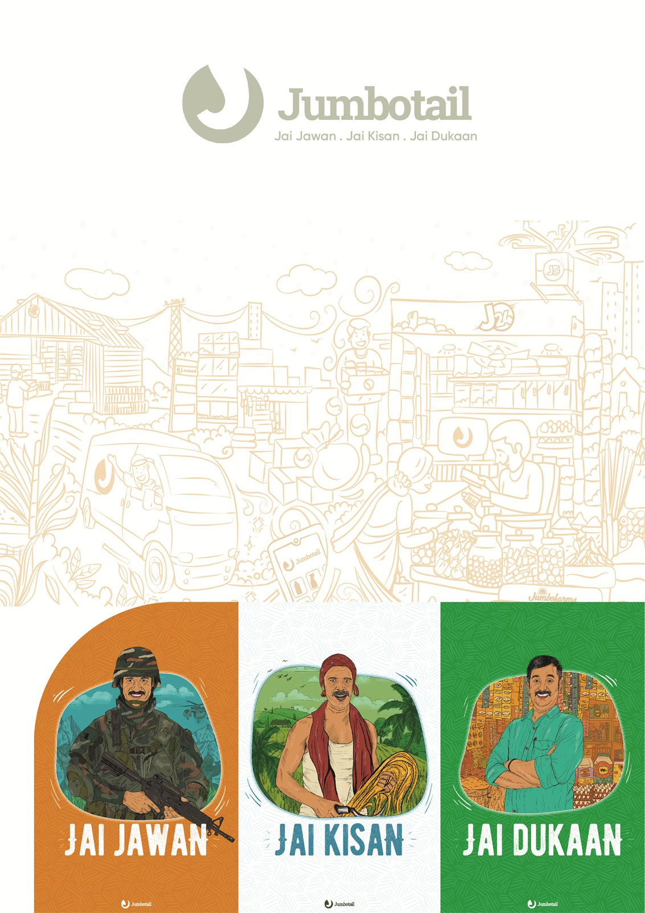
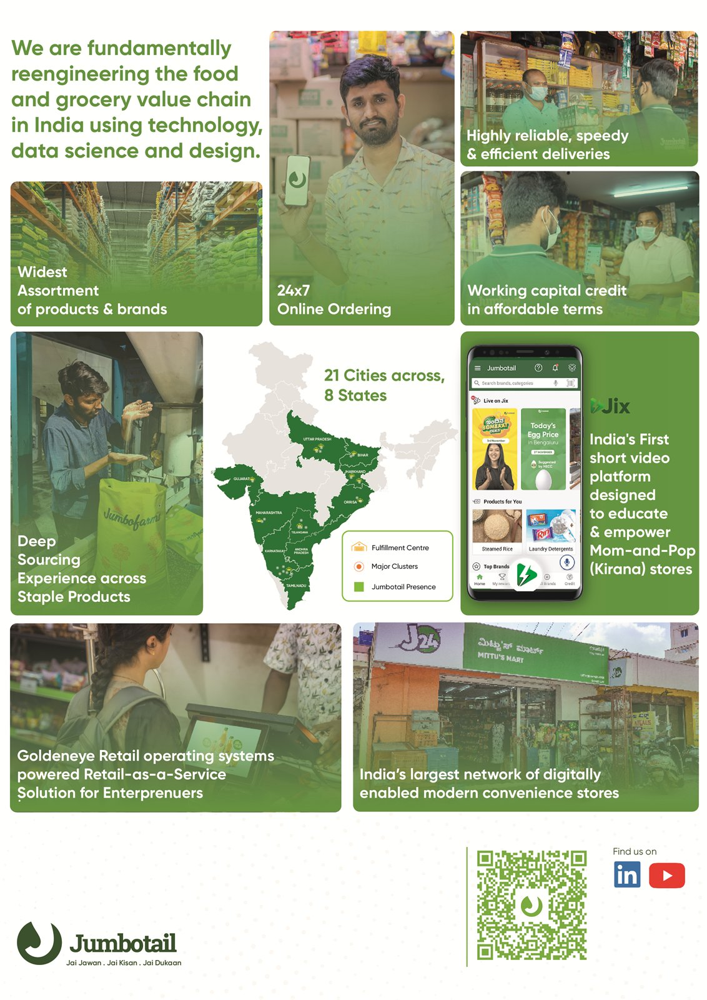
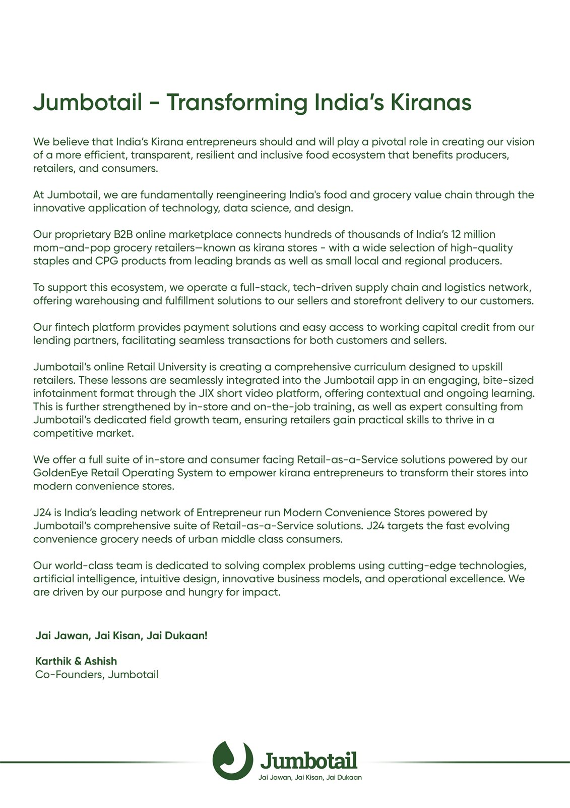
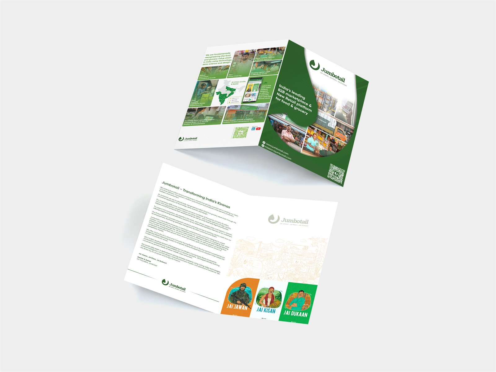

Gulf Foods
Catalogue
A brochure for Gulf Foods, where the audience is not a shopkeeper but an international buyer who has never heard of Jumbotail and has ten seconds at a stand.
Three people, three words.
Jai Jawan, Jai Kisan, Jai Dukaan — the soldier, the farmer, the shopkeeper. The first two are a national slogan every Indian reader knows; the third is Jumbotail putting the kirana owner in that line.
Photographed as three portraits in three colour fields, so the cover works before a word is read. Inside, the claim is plainer: India’s leading B2B marketplace and new retail platform for food and grocery.
A map, a grid, and the numbers.
The spread runs a grid of photographs against a map of India — reach stated as geography rather than as a figure, which is the argument a buyer at a trade fair is actually assessing.
The back page drops the pictures entirely for a block of text signed off by the founders. A brochure that has to survive being picked up by someone who will read none of it, and by someone who will read all of it.
5 pieces.



